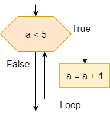
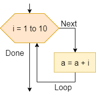
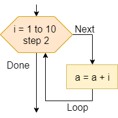
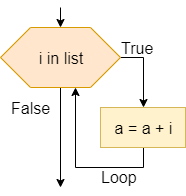

Loops are another way we can control the flow of our program, this time by repeating steps based on a given criteria. A computer is able to repeat the same instructions many times. There are several ways to tell a computer to repeat a sequence of instructions:
- Repeat an infinite number of times, e.g.
while true. This construct is useful in software applications such as servers that will offer a service. The service is supposed to be available forever. - Repeat a specific number of times, e.g.
Repeat 10 timesorfor i = 1 to 10. This loop can be used when you know the number of repetitions. There are also loops that allow you to repeat as many times as there are elements of a collection, such asfor each item in list - Repeat according to a condition. The number of repetitions depends on the condition. Most programming languages support the
whileloop, which repeats while the condition is true.
In repeat while loops, the number of repetitions depends on the occurrence of a condition: the cycle repeats if the condition is true. Loops can also be nested, just like conditional statements.
Loops in Flowcharts & Pseudocode
The table below lists the flowchart blocks used to represent loop statements, as well as the corresponding pseudocode:
| Operation | Flowchart | Pseudocode |
|---|---|---|
| While Loop |  | |
| For Loop |  | |
| For Loop with Step |  | |
| For Each Loop |  | |
Loops in Python
To see how loops look in Python, let’s recreate them from the flowcharts shown above.
As we can see in the examples above, we must carefully indent each block of code to help set it apart from the other parts of the program. In addition, each line containing for and while must end in a colon :. Finally, notice that the range() function in Python does not include the second parameter in the output. So, to get the numbers $1$ through $10$, inclusive, we must use range(1, 11) in our code.